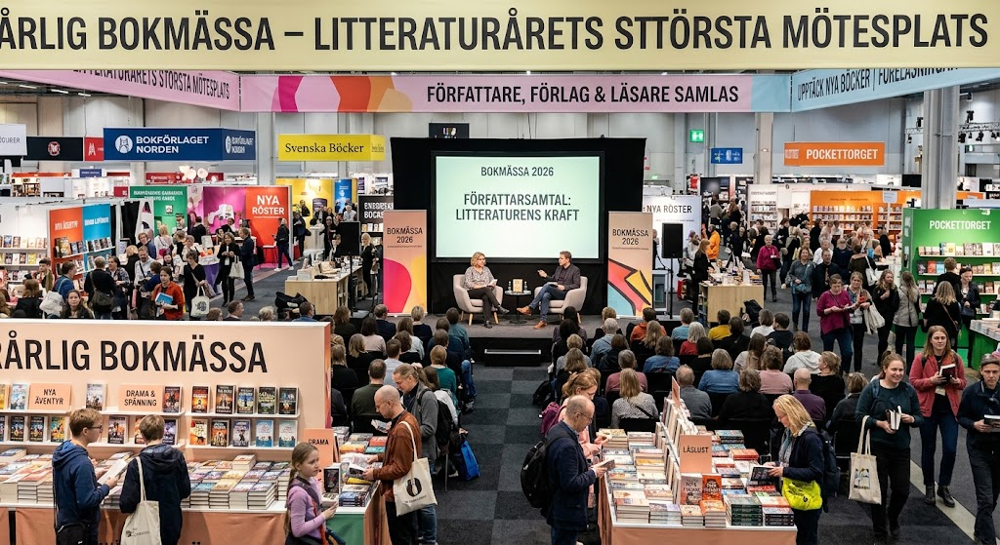
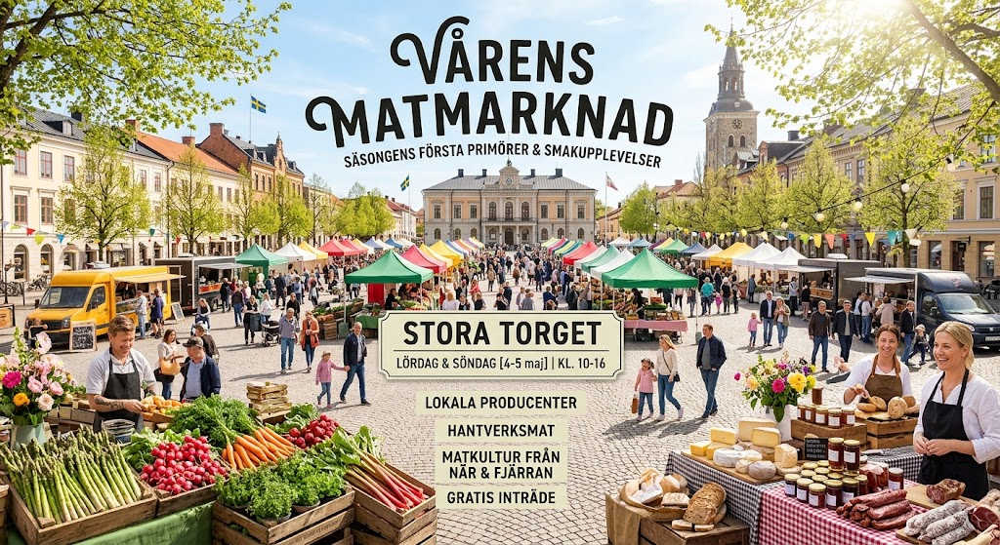

På vår hemsida är det enkelt att upptäcka och boka spännande upplevelser i din lokala kommun.
Här hittar du allt från konsert- och teaterbiljetter till lokala mässor, sportevenemang och inspirerande föreläsningar.
Det här kan du göra hos oss:
Upptäcka event: Sök och filtrera enkelt efter kategorier, datum och platser för att hitta det som passar just dig.
Boka din plats: Säkra dina biljetter snabbt och smidigt direkt på sidan med några få klick.
Hålla dig uppdaterad: Se alla viktiga detaljer inför eventet - såsom tider, platser, programupplägg och praktisk besöksinformation.
Få inspiration: Utforska populära evenemang och upptäck nya upplevelser du annars inte hade koll på.
Oavsett om du planerar en utekväll med vännerna, letar efter en helgaktivitet med familjen eller vill lära dig något nytt, hjälper vi dig att hitta rätt upplevelse och säkra din plats!
Sommarmusik festival
Musik
En solig utomhusfestival med livemusik inom pop, rock, hiphop och elektroniskt, samt god mat, dryck och härlig stämning för alla åldrar.
Plats: Stadsparkens friluftscen
Tid: 5 dec 2026 - Kl 18:00
Arrangör: Sommarmusik Produktion AB
Antal platser: 500
Toppmöte för teknisk innovation
Näringsliv
En mötesplats där branschexperter och utvecklare samlas för att utforska nya tekniktrender. Eventet erbjuder inspirerande föreläsningar och nätverkande inom bland annat AI och modern mjukvaruutveckling.
Plats: Stadsbiblioteket
Tid: 14 nov 2026 - Kl 09:00
Arrangör: Innovationsrådet
Antal platser: 250
Vintergalan för välgörenhet
Insamling
Ett stämningsfullt vinterevenemang som samlar företag och privatpersoner för en kväll fylld av underhållning och god mat. Genom insamlingar, auktioner och lottdragningar går intäkterna till att stötta utvalda välgörenhetsorganisationer och hjälpprojekt.
Plats: Grand Hotels festsal
Tid: 19 dec 2026 - Kl 19:30
Arrangör: Stiftelsen Hjälpande Hand
Antal platser: 150
Pitchkväll för startupbolag
Näringsliv
Pitchkväll för startupbolag är ett intensivt event där entreprenörer pitchar sina affärsidéer inför investerare och branschexperter. Kvällen erbjuder en unik chans för nystartade bolag att säkra kapital och knyta värdefulla kontakter för framtida tillväxt.
Plats: Stadsbiblioteket
Tid: 3 nov 2026 - Kl 17:30
Arrangör: Innovationsrådet
Antal platser: 80
Årlig bokmässa
Kultur

Den årliga bokmässan är litteraturårets största mötesplats där författare, förlag och läsare samlas. Besökare kan upptäcka nya böcker, gå på författarsamtal och ta del av inspirerande föreläsningar.
Plats: Stadsbiblioteket
Tid: 16 jan 2027 - Kl 10:00
Arrangör: Ava Eriksson
Antal platser: 300
Vårens matmarknad
Mat

Vårens matmarknad är en livfull mötesplats där lokala producenter och matentusiaster samlas för att fira säsongens första primörer och smakupplevelser. Besökare kan ströva bland stånd fyllda med färska råvaror, hantverksmat och matkultur från både när och fjärran.